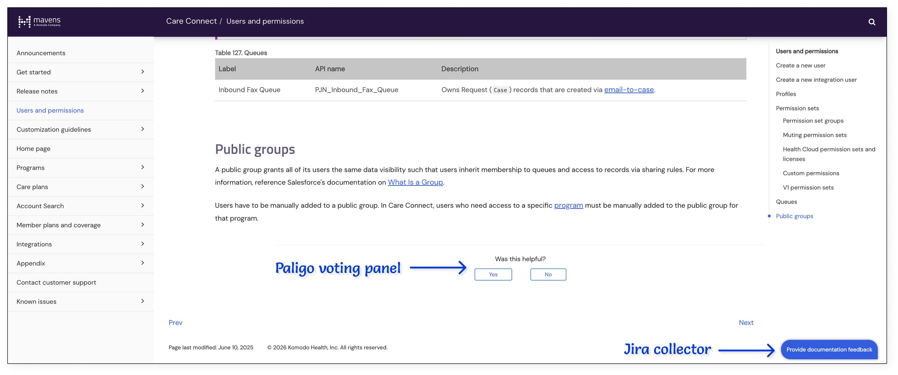
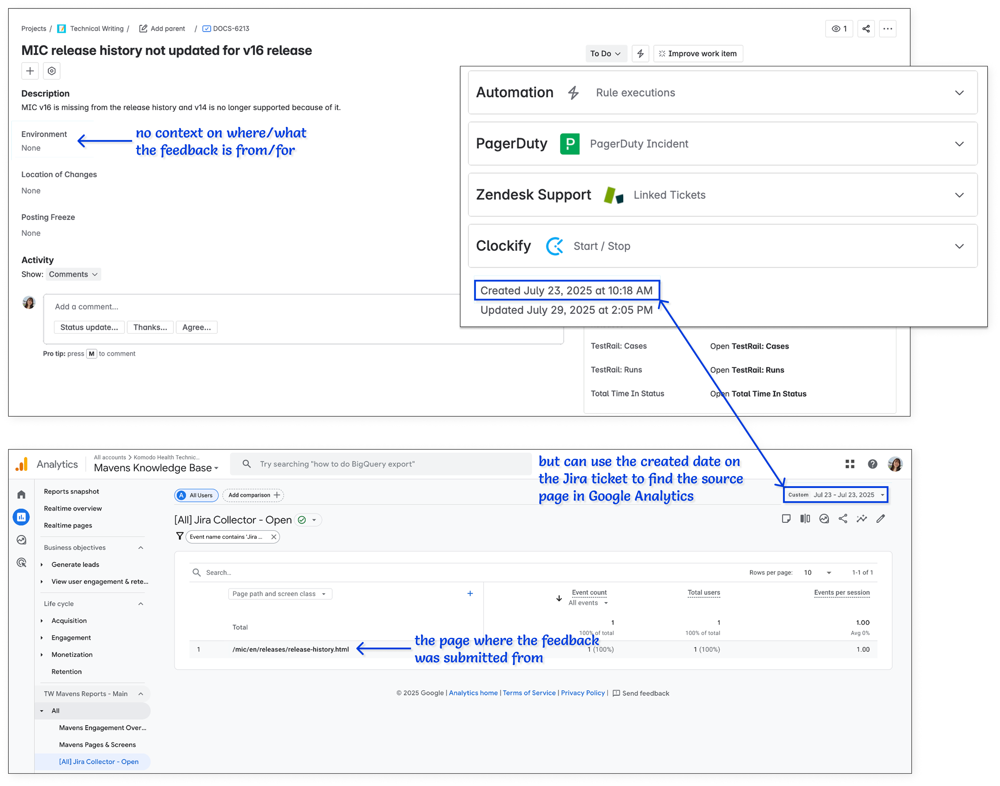

Table of contents
Context
I joined Mavens, a Komodo Health (“Komodo”) company, in December 2021 and was the sole technical writer for the Care Connect product since February 2022. Migrated from the Patient Journey Navigator (PJN) accelerator and previously known as the Patient Support Platform (PSP) product and then the Komodo Care Connect (KCC) product, Care Connect was Mavens’s Salesforce solution for empowering patient services teams to support patients through targeted treatment plans and individualized care. In early 2026, development on the Care Connect product was discontinued.
Below, I describe my high-level approach to writing the release notes and product documentation for Care Connect V1, including the initial major release as well as all of its subsequent minor and patch releases.
Ramping up
The first step to documenting any product is to understand the product. For Care Connect, this meant understanding both the underlying Salesforce platform that the product was built on as well as the overall context and space for which the product was built.
The second step to writing any documentation is to understand the target audience. For Care Connect’s product documentation, this meant understanding the system administrators and Apex developers in pharmaceutical companies who needed to configure, customize, and extend the product to meet their specific business goals.
Both of these steps implied that I needed to develop a solid understanding of the Salesforce foundation in order to document the intricacies of the Care Connect product. This was especially true because the Mavens documentation site explicitly states that it assumes readers have proficient knowledge on standard Salesforce administration, including on Apex, Visualforce, and Lightning Component development tools and environments, and does not cover out-of-the-box features from Salesforce, Health Cloud, or any third-party applications. This became the most challenging part of writing the Care Connect product documentation for me as I struggled to even understand the fundamental relationship between objects and custom metadata types in Salesforce, and even the knowledge I had previously gained from delivering the Publications Planning user guide proved to be insufficient for starting the Care Connect admin guide. For instance, while I may have only needed to list the primary Pubs objects so that Pubs users knew where and which data were stored, I now also needed to document the different Care Connect custom metadata types that managed all of the standard and custom objects so that Care Connect admins could configure how the data were stored and displayed.
I tried to take more Trailhead courses on my own to better understand the underlying Salesforce platform but quickly realized that I needed to be more strategic with my approach. I ultimately scheduled several calls with members of the legacy PJN team as well as people in the new Care Connect team to ask fundamental questions about Salesforce. I also created Lucidchart diagrams to better visualize the relationships among the different entities in the Care Connect product. In doing so, I was finally able to ramp up to Salesforce in the context of the product that I eventually needed to document.

The Lucidchart that I had created and annotated with help from PJN and Care Connect team members. I have redesigned it slightly for this write-up. I use red to call out my questions and blue to represent my notes. The messiness of this diagram is an indication of my confusion at the time.
In addition to Salesforce, I also had to learn about the current state of the Care Connect product that was migrated from the PJN accelerator, including all of the existing features as well as its typical use cases and user flows. I was very fortunate that there was quite a bit of existing documentation on the legacy PJN accelerator for me to reference and that many of the Care Connect team members were also learning the product for the first time. I found it really fun and rewarding to get on hour-long calls with some members of the Care Connect team just to try out different features and user flows together.
To know which parts of the Care Connect product that I needed to pay particular attention to, I also regularly consulted the live documentation of the Medical Information Cloud (MIC) product, which is Mavens’s first Salesforce-based product. In doing so, I realized, for instance, that I needed to create entity relationship diagrams (ERDs) for all of Care Connect’s custom objects and custom metadata types. I received a lot of guidance from the technical writer who created the ERDs for MIC and eventually began creating my own ERDs for Care Connect in Lucidchart.

A simple ERD for the Consent object in Care Connect that I eventually created. It showcases the relationships among the Consent custom object from Care Connect, the Account, Case, and Data Use Purpose standard objects from Salesforce, and the Envelope Status third-party object from DocuSign.
Writing for V1
Because Care Connect is the productization of PJN, most of the Care Connect team’s Jira tickets focused on testing and packaging the legacy PJN features for the initial Care Connect V1 release. As such, I also focused on documenting the major legacy features that were migrated into the product. I prioritized features of high visibility and deprioritized functionality that customers may not use immediately upon the launch of the product.
For each major feature, I performed the following steps:
- I read through the existing PJN documentation in Confluence and any Care Connect tickets in Jira
- I ran through any user flows mentioned by the PJN team or by the Care Connect QA engineer
- I reached out to the PJN team members for questions regarding core functionality and the Care Connect team members for clarifications regarding implications to internal stakeholders and external customers
- I edited the existing PJN accelerator content to fit the new Care Connect product narrative based on steps #2 and #3 and filled in any documentation gaps as appropriate, such as creating the ERDs for all of the objects and custom metadata types
- I sent the updated documentation to Care Connect team members for subject matter expert (SME) reviews on content accuracy
- I sent the edited documentation to another technical writer for a peer review on content readability, punctuation, and grammar
I faced some difficulty enforcing step #5 with the Care Connect team because many of the engineers have never worked with technical writers before. To relieve some confusion, I wrote up an internal Confluence page to explain how engineering teams for the Mavens products could work with our Technical Writing (TW) team.

A snapshot of the Confluence page I wrote for the Mavens engineering teams. This page has been edited since I first published it in 2022.
In addition to documenting the major features, I also had to perform several one-time tasks to prepare for Care Connect’s first ever release, such as:
- adding a new Care Connect card to the home page of Mavens’s documentation site;
- creating new CSS and JavaScript files for the Care Connect publication; and
- creating a new Care Connect layout with the CSS and JavaScript files in Paligo.
Only after I resolved all of the feedback from the SME and peer reviews and finished the one-time tasks was I finally able to publish the Care Connect documentation alongside the Care Connect release. I officially published the Care Connect V1 product documentation on Mavens’s public help site in July 2022 and subsequently received the following peer bonuses from the product manager and an engineer.

The peer bonuses I received from the product manager and an engineer.
Writing for V1.x.y
Planning for minor and patch releases
After Care Connect V1 went live, the engineering team continued to test more features in the Care Connect product that were migrated from the PJN accelerator but did not ship with the initial product launch. The engineers also proceeded to implement new functionalities, enhance several existing components, and fix a number of bugs. Instead of shipping the updates in a new major release, though, the Care Connect team decided to deploy several minor (x) and patch (y) releases as V1.x.y.
I had frequently referenced the MIC documentation for guidance when writing for Care Connect V1 and wanted to do the same for Care Connect V1.x.y. However, I quickly noticed that MIC traditionally only released major versions, not minor or patch versions, and that I would need a different writing approach for Care Connect to distinguish between features in the original V1 major release and features in the subsequent V1.x.y minor and patch releases. After some thought, I decided to add a version number to the section title of each new and updated feature and add a version column to each metadata table as appropriate. This way, internal and external stakeholders could easily determine the specific release in which a feature or entity was added, deprecated, or updated.

Screenshots of the Care Connect V1.x.y release notes that I eventually published and iterated on. I included a version number to the title of each new feature and added version columns to the tables of the new, deleted, and modified entities.
Identifying what needed documentation
As the engineering team continued to add new features and enhancements to the Care Connect product that did not previously exist in the PJN accelerator, I needed to identify the specific product updates that required documentation. Traditionally, either the product manager or the engineering lead would take on this role.However, because I wanted to be more involved with the Care Connect team and because I felt comfortable owning the responsibility, I volunteered to take this job on and was given the green light to do so.
From working with the rest of the TW team, I realized that there were generally three types of documentation that I was expected to write for the Mavens products:
- Release notes
- Product documentation (otherwise known as the full administrator guide)
- Known issues (which I will discuss in the Documenting known issues section below)
I also realized that, typically:
- new and updated features required both release notes and product documentation;
- fixes to bugs in production required only release notes;
- fixes to bugs that were introduced during development or that were not necessarily visible to users did not require release notes or product documentation; and
- spikes and DevOps tickets did not require release notes or product documentation.
With these guidelines in mind, I began to tag specific Care Connect Jira tickets that I thought required documentation and worked with the Care Connect team to confirm my assumptions. I also began to attend their backlog refinement and sprint planning sessions to get ahead in identifying the tickets that I potentially needed to document for. Joining these meetings was helpful because I was able to develop a high-level understanding of what features were going to be developed, how those features were going to be implemented, and what impact those features were going to have on customers. I also started to attend the Care Connect team’s daily standups to stay up to date on any tickets that may have been created or added in the middle of a sprint.
Researching the information
For each ticket that I marked as requiring documentation, I waited for the engineers to finish developing, testing, and merging their code changes before I began researching and writing. For larger features, I waited until most, if not all, of the tickets for the feature had been completed. Then, I:
- reviewed each ticket in its entirety to understand the expected and actual change, including reading the ticket’s description and acceptance criteria, opening any linked tasks or epics, and viewing any screenshots or recordings left in the comments;
- reviewed any notes I had taken during backlog refinement or sprint planning;
- reviewed the pull requests (PRs) in the tickets to catch any new, deleted, or modified entities that may have been missed from step #1; and
- previewed the changes in a scratch org to better understand the user flow and user impact.
If I had any questions about a ticket, I either reached out to the engineer who worked on the ticket, checked in with the QA engineer who tested the feature, or asked the team for clarification during the daily standups.
Documenting the information
Only after I established a solid understanding of a ticket did I begin to actually put pen to paper, using Paligo to write and manage all of my content, Snagit to capture and annotate any screenshots, and Lucidchart to create any diagrams.
As I documented the product updates implemented by the engineering team, I constantly asked myself the following questions:
- Where in the existing product documentation should I make changes to (e.g., a new page, section, paragraph, etc)?
- How should I present the new information (e.g., a paragraph, table, bulleted list, etc)?
- Should I add, edit, or remove information?
For example, if a new entity was added, I needed to remember to create new schema tables, add new fields to existing schema tables, and/or create and update the ERDs. Similarly, if any entity was deprecated, I needed to remember to add warnings throughout the product documentation where the entity was mentioned to alert users about which versions the entity will remain available in. This was because Mavens typically supports the two latest major versions of each product, so I could not immediately remove information about a deprecated entity from the product documentation.

A snapshot of the warnings I had added to a custom metadata type when a single field was initially deprecated and then when the entire entity was also deprecated.
Getting SME reviews and peer reviews
After I finished drafting the release note and/or product documentation for a ticket, I would send my content first to a SME and then to another technical writer and make edits as necessary. All of my documentation had to go through at least one SME review and one peer review before I could publish any content onto our external documentation site to ensure both accuracy and readability, respectively.
Publishing updates via a posting freeze
Mavens typically has a major release in the fall, a major release in the spring, and sporadic minor and patch releases throughout the year for each of its products, so to align with each product release, the TW team had a posting freeze process during which we compiled and published all of the documentation changes for the designated release accordingly. We called it a “posting freeze,” similar to how engineering teams may have a “code freeze,” because we could not freely publish any Paligo output while we merged our changes, updated our table of contents, and more. The overall posting freeze process was already established before I joined Mavens and Komodo, but I worked with the other technical writers to revamp and simplify the process. For example, we removed the step to request for the list of schema changes from the engineering leads because we began to gather and document this information as part of our own standard product documentation process. Additionally, we added a task to create a new section in the product’s Announcements page whenever there were major updates to help readers identify the location of changes in both the product and the documentation. I also realized that there were several differences in the posting freeze tasks for publishing the release notes and product documentation of each major, minor, or patch release and that certain tasks had to be completed in a specific order. For instance, we could only use Screaming Frog to crawl the help site to check for any broken external links after the latest documentation changes were actually published. With all of this in mind, I took initiative to make those distinctions clear in our updated posting freeze tasks.

A sample list of the posting freeze tasks that must be completed to publish the release notes of a minor or patch version. On each task, there is an indication of whether the task should be completed before, during, or after the posting freeze period.
Documenting known issues
In addition to the scheduled major, minor, and patch versions for Care Connect, I also had to document any known issues that were found in the product.
Creating a KI definition page
For Mavens, a known issue (KI) is a bug found in a live product that is deemed severe or common enough for the product team to acknowledge and potentially release a hotfix patch for. When I asked the product teams how they determined if a bug was “severe or common enough,” though, I noticed there was hesitation and inconsistency in their responses. It was clear that there was no real consensus on how a KI got identified, and I knew immediately that this would raise confusion amongst customers as well. I subsequently proposed dedicating a page on the help site just to break down this information for both internal and external stakeholders. Everyone was on board with this idea, so I drafted and published a KI definition page on the documentation site for each Mavens product.

A snapshot of the KI definition page that I wrote and published.
With this freshly in my mind, I proposed creating three KIs for Care Connect when the engineering team found issues updating Care Connect V1.1.0 to Salesforce Spring ‘23. I was given the green light to do this, so I documented, published, and since archived the KIs on the documentation site.
Improving KI user flow in documentation site
Not too long after creating the KI definition page, two product and engineering leads expressed concern to our TW team that individual KIs were difficult to find in the documentation site. The link to the list of KIs was embedded in a sentence on the KI definitions page, and the link of each active KI would break once it became an archived KI.

The original user flow for finding KIs in the documentation site. The screenshots use the MIC documentation instead of the Care Connect documentation and contain the old Komodo branding instead of the updated Mavens branding.
I agreed with their sentiment and looked into how our TW team could help improve the user experience (UX) of finding both active and archived KIs in the documentation site. I did some testing with HTML and JavaScript in Paligo and designed two different user flows in Figma. At a high level, the two user flows were similar in that:
- the links to the KI definition page and subsequently the active and archived KI pages would be added to the left-hand navigation for greater visibility and fewer clicks; and
- the content of each KI would be in its own page rather than embedded in an “Active KIs” or “Archived KIs” page to prevent breaking links.
However, the first user flow would keep a copy of the KI definition page in a KI output while the second user flow would only have the KI definition page in each of the individual product’s output. Additionally, while the former reduced the number of clicks for users who may not know what KIs are at all, the latter was easier to implement.

The first proposed solution for updating the KI user flow in the documentation site. The screenshots use the MIC documentation instead of the Care Connect documentation and contain the old Komodo branding instead of the updated Mavens branding.

The second proposed solution for updating the KI user flow in the documentation site. The screenshots use the MIC documentation instead of the Care Connect documentation and contain the old Komodo branding instead of the updated Mavens branding.
After sharing both proposed solutions to the product and engineering leads, I received feedback to proceed with the first user flow, which was my preferred design as well. Despite the greater amount of work I needed to do, the first user flow provided a better experience for users and allowed the KI output, which we needed regardless, to serve a greater purpose than to simply redirect users to the other outputs. I made all of the necessary code changes and published new outputs for all of the products.
Addressing documentation feedback
Just like how no product will ever be completely void of bugs, no documentation will ever be “perfect.” Even though the rest of the TW team and I tried to be as thorough in our writing and reviewing process as possible, we could never guarantee that our documentation would always be entirely accurate and readable. Knowing this, we embedded a Paligo voting panel and a Jira collector into the documentation site for internal and external stakeholders alike to submit feedback. For feedback submitted through the Jira collector, our team would receive a ticket on our TW board with the information they entered. We reviewed and prioritized these tickets regularly and made ad hoc documentation updates accordingly.

The Paligo voting panel and the Jira collector were added to the help site to ingest documentation feedback.
Some users who submitted feedback did not always provide enough information for us to know what page they were making suggestions for, though, so we were not always able to complete the incoming requests. To resolve this issue, I took ownership of integrating Google Analytics into the documentation site to track the source pages from which the Jira feedback forms were submitted based on the creation dates of the corresponding Jira tickets.

Google Analytics was also added to the help site to gather more context on the source page from where feedback through the Jira collector was submitted. The screenshots use the MIC documentation, but they also applied to the Care Connect documentation.
Final thoughts
As the first product I have ever documented as a technical writer, Care Connect will always be dear to my heart. I learned so much from and with the team, especially around Salesforce, the patient services space, and the importance of asking questions early on to more quickly and effectively ramp up to a new product. I also realized and appreciated how receptive everyone in both the Care Connect team and the TW team was to all of my ideas. I felt very comfortable sharing my concerns on things like the existing process for identifying bugs as KIs and took part in revamping the posting freeze process with the other technical writers. I’m really glad to have met everyone who worked on the various Mavens products and will always look back fondly at these memories.